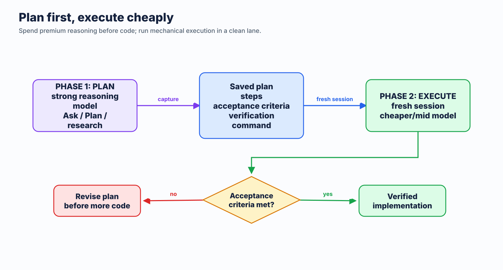

Practitioner briefing
18 actions for cheaper, faster, more reliable AI-assisted engineering.
Need the full training? Open the 8-hour workshop.
Reduce unnecessary input, output, and tool overhead.
Keep context focused. Avoid expensive rework loops.
Plan, verify, and use the right agent mode for the task.
Community guidance, not official GitHub or Microsoft policy.
System prompt, instructions, files, history, tool schemas, and your prompt.
Responses, reasoning, and tool calls. Usually the highest-cost token type.
Stable request prefixes can be reused at a lower effective cost.
Every read, command, retry, and rework step compounds cost.
Use short, explicit formats for code tasks, reviews, and summaries. Output control compounds across every interaction.
Do not compress reasoning or evidence when the task needs it.
Project landmines, commands, naming, architecture rules, output constraints.
Boilerplate, discovery facts, duplicate rules, occasional workflow checklists.
Every token in .github/copilot-instructions.md is paid repeatedly. Put rare guidance in scoped or on-demand files.
applyTo instruction files for path-specific rules.For one long task, keep this stable:
Changing the lane or harness can lose cached-prefix savings. Start a fresh chat with a compact handoff instead.
Questions, explanations, decisions. No tools needed.
Bounded changes with known files and intent.
Multi-file work that needs exploration, commands, and verification.
Do not use Agent mode for a question that Ask mode can answer.
Choose reasoning effort before the long session. Do not raise it mid-thread.

Capture acceptance criteria, likely files, risks, and verification. Start execution with only that handoff.
/context in Copilot CLI to see what is loaded.Compiled defaults for common developer command output.
YAML pipelines and local savings tracking.
Choose one filter layer per command path. Do not stack both by default.
Graphify maps a large repo once, then agents query structure instead of repeatedly reading broad file sets.
graphify query "where is auth middleware?"
graphify path "Router" "Database"Best for large repos and repeated agent sessions. Skip it for small, one-off changes.
Use /context to inspect Copilot CLI context pressure and loaded tools.
Tokentop shows local live tokens, cost, burn rate, and budget alerts.
Visibility finds waste. It does not compress context by itself.
Choose it before long work. If the task needs a different harness, create a fresh session rather than mutating a long transcript.
Small verification cost prevents a new debugging or review session later.
Constrain output. Trim repo instructions.
Route Ask, Edit, and Agent deliberately.
Audit MCP tools and command output.
Plan-first workflows, cache stability, and usage review.
Every task: constrain output, target context, choose the harness, plan, and verify.